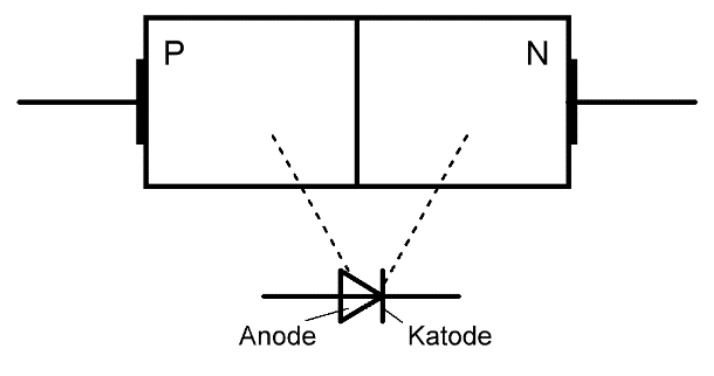
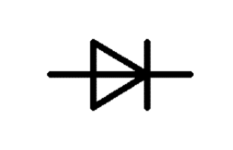

Halbleiterdiode
Aufbau
Die Halbleiterdiode besteht aus zwei fest miteinander verbundenen Halbleiterkristallschichten, einer P-Schicht und einer N-Schicht.
Schaltzeichen
Das Dreieck im Schaltzeichen symbolisiert den P-Kristall und der Strich den N-Kristall. Der P-Kristallanschluss wird als Anode und der N- Kristallanschluss wird als Katode bezeichnet. Die Richtung des Pfeils zeigt die Durchlassrichtung der Diode an.
Wirkungsweise
Die Halbleiterdiode lässt den Strom in einer Richtung durch und sperrt ihn in der anderen Richtung die sogenannte Ventilwirkung.
Erklärung
-
Liegt der positive Pol einer Spannungsquelle an der Anode und der negative Pol an der Katode, so wird der PN-Übergang niederohmig. Es fließt ein Strom. Der PN-Übergang ist in Durchlassrichtung gepolt.
-
Liegt der negative Pol einer Spannungsquelle an der Anode und der positive Pol an der Katode, so wird der PN-Übergang hochohmig. Es fließt kein Strom. Der PN-Übergang ist in Sperrrichtung gepolt.
Diodenkennlinie
Die Kennlinie beschreibt die Zusammenhänge zwischen Strom und Spannung
an einer Diode. Der Verlauf der Kennlinie ist im Sperrbereich und
Durchlassbereich sehr unterschiedlich. Im Durchlassbereich tragen die
Achsen die Bezeichnungen $U_F$ und $I_F$. Der Index $F$ kommt aus dem
Englischen für forward direction
. Im Sperrbereich wird der Index
$R$ für reverse direction
verwendet.
Kennlinienauswertung
-
In Durchlassrichtung beginnt die Diode den Strom zu leiten, wenn die äuβere Spannung den Wert der Diffusionsspannung am PN-Übergang erreicht hat. Diese Spannung wird als Schleusenspannung $U_S$, auch Schwellspannung oder Durchlassspannung genannt.
Siliziumdiode
$$ U_S = 0,6V ... 0,8V $$Germanium
$$ U_S = 0,3V ... 0,4V $$ -
Der Durchlassstrom darf den Wert $I_{FMax}$ nicht überschreiten, da die Diode sonst zerstört werden kann.
-
Die $\ce{Si}$-Diode hat eine steilere Durchlasskennlinie als die $\ce{Ge}$-Diode. Bei der $\ce{Si}$-Diode tritt nach Überschreiten der Schleusenspannung schlagartig ein groβer Stromfluss ein. Bei der $\ce{Ge}$-Diode erfolgt der Übergang vom kleinen zum groβen Stromfluss allmählich.
-
In Sperrrichtung flieβt fast kein Strom. Ab einer bestimmten Sperrspannung der Spitzensperrspannung $U_{RMax}$ kommt es zu Durchbrüchen, welche normalerweise die Diode zerstören.
-
$\ce{Si}$-Dioden haben ein besseres Sperrverhalten als $\ce{Ge}$-Dioden.